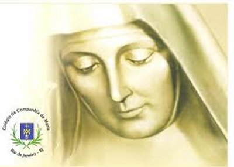
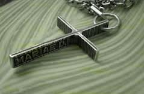
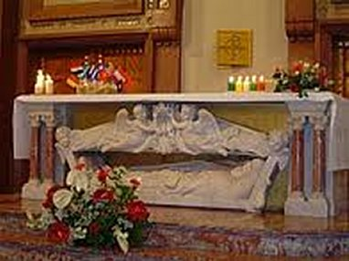

OBRA PARA A HUMANIDADE
MADRE GERAL DA COMPANHIA DE MARIA NOSSA SENHORA
Nesta mesma época, a pedido dos Superiores
Religiosos e por insistência do Cardeal de Sourdis, Joana retornou a 
Para Joana, as companheiras de vida eram as pessoas a quem ela dedicava um especial afeto e as tratava como irmãs e amigas. Muitos dos seus gestos demonstravam claramente o valor que ela dava as boas relações com suas “irmãs”, que transformava em laços familiares que ela criava por seu afeto nobre, generoso e expressivo. Estas informações são descritas pela História da Ordem.
Com o seu esforço pessoal e de todas aquelas moças que abraçaram o projeto maravilhoso da Instituição, foi possível iniciar e impulsionar a COMPANHIA DE MARIA, que é o nome atual da ORDEM DE NOSSA SENHORA, e que nasceu numa pequena residência em Bordeaux na França, denominada Casa do ESPÍRITO SANTO.
Joana colocou todos os seus bens para ajudar na realização e manutenção do seu ideal apostólico. Muito embora, em muitas ocasiões, as mulheres chegaram a carecer de coisas mais necessárias, porque os recursos financeiros tinham acabado.
Mas é bem verdade, que em muitas oportunidades, a Providência de DEUS se fez presente através de gestos concretos de bondade. Estimulou pessoas a fazerem doações e ajudarem a nova Ordem Religiosa. Foi assim que Andrés de Nesmond sentiu-se sensibilizado a colaborar, e fazer algo para ajudar o trabalho daquelas moças em benefício das jovens carentes e mais necessitadas, procedendo assim, ele compreendeu que estava fazendo algo por sua própria gente, suas conterrâneas e por sua pátria. Enviou-lhes considerável soma de dinheiro, ainda quando ele mesmo ignorava as circunstâncias e as profundas necessidades que passava a COMPANHIA DE MARIA NOSSA SENHORA. Ele admirava aquela Obra, pois até aquela época ninguém tinha visto na França, uma Comunidade Religiosa dedicada à educação das mulheres. Era uma iniciativa pioneira, que ninguém tinha concebido e nem realizado.
As novas religiosas se aplicaram interessadamente em viver unidas, na oração e no
trabalho de educar as jovens. E 
Mas também, não faltaram as contradições... Na História da Ordem existem registros que evidenciam a grandeza das dificuldades encontradas por Joana: “Se a fundadora tivesse edificado a sua obra com base no poder humano, talvez as suas esperanças fossem frustradas. Em todos os bairros da cidade só se ouviam censuras a nova Instituição! Sempre aparecia uma pessoa para criticar e dizer algo sobre Joana de Lestonnac! Algumas chegavam ao absurdo de dizer, que por caridade, se devia persuadi-la, não levar avante uma empresa tão superior as suas forças! Outros caçoavam, e a chamavam de a “Monja de Toulouse”, e havia também pessoas que a taxavam de ambiciosa, por ter deixado uma condição de simples religiosa na Ordem Cisterciense, para querer ser fundadora de uma Ordem Religiosa. Enfim, os críticos eram muitos e cada qual falava impulsionado por sua própria paixão e seu ponto de vista pessoal”.
O tempo passou e a verdade venceu. Em Maio de 1608 aquelas moças viram publicamente as suas vidas oficialmente Consagradas a DEUS, para “o Serviço da Educação da Juventude Feminina na Fé”.
O desejo de anunciar JESUS CRISTO despertou no grupo uma preocupação de fazer o melhor, para conseguir que cada uma das alunas fosse uma jovem disposta a viver a fé cristã e ter uma existência de acordo com o Evangelho.
Esta realidade se tornou significativa no dia 21 de Novembro, na celebração da Festa da Apresentação da VIRGEM MARIA no Templo, data em que as alunas marcavam em seus jovens corações o desejo de ser como MARIA NOSSA SENHORA, uma “luz” para o mundo. Diante dos olhares entusiasmados da multidão desfilaram mais de mil jovens, de todos os países, que foram educadas na COMPANHIA DE MARIA. As renuncias que fizeram foram recompensadas por muitos frutos de “cem por um”.
Joana de Lestonnac tinha uma grande vocação para ser educadora. Ela sabia que educar, na acepção concreta da palavra, é dar a vida, é ser mãe, é gerar o homem novo e a mulher nova que existe dentro de cada ser humano. É esculpir no coração da criança e do jovem, os valores que são capazes de transformar o mundo, segundo o projeto de DEUS. Por todas estas razões, ela lutava e se emocionava em ensinar e educar as jovens.
A COMUNIDADE RELIGIOSA CRESCEU
Cresceu aos olhos de todos, e se fez esperança para o futuro. Havia muitos projetos de fundações. Joana e as primeiras companheiras envelheceram. Elas cumpriram de maneira vitoriosa a missão existencial. Terão que ser substituídas. Jovens estudantes do Colégio com grandes ideais, como Isabelita Toussin, Ana d’Arrerac, Francisca de Franc, Susana de Briançon, Juana de Labat, Francisca de Segur e Ana e Catalina de Guerin, decidem continuar a Obra, seguindo os passos da Madre Fundadora, atendendo ao chamado do SENHOR DEUS.
Devido ao aumento de alunas e de vocações religiosas se fez necessário montar outra “Casa da Ordem” . Joana, iluminada pela Luz de DEUS, teve forças e inspiração, para superar todas as dificuldades e montar a nova Casa em Bordeaux, na Rua do Ha. E então, se concretizou o seu desejo e objetivo de constituir um Grupo de Apóstolos, os quais realizaram a Profissão dos Votos Solenes no dia 8 de Dezembro de 1610. Este foi o germe que brotou para o mundo levando a Mensagem que o SENHOR DEUS confiou a Joana de Lestonnac. Como temunho evidente desta realidade, foram doze (12) as fundações que saíram desta Casa, nove (9) durante a vida da Fundadora e três (3), após a sua morte. Ao todo, foram trinta (30) as Obras iniciadas em diversos lugares da França, enquanto a Fundadora Joana ainda estava viva. Seu caráter vivo, resoluto, otimista, empreendedor e constante, unido a um espírito forte e decidido, com o ideal determinado de fazer DEUS presente na vida para socorrer as necessidades de cada pessoa, ela construiu o ponto de apoio para a expansão da sua Obra.
Dez anos depois da sua morte em 1650, a Comunidade de Beziers fundou a primeira Casa na Espanha, em Barcelona. Dali nasceu Tudela em 1687, que se converteu na ponte para o salto ao Continente Americano, com as fundações no México, em Mendoza na Argentina, em Santa Fé (Bogotá) na Colômbia, nos Estados Unidos da America, no Canadá, e em São Paulo no Brasil.
MORTE DE JOANA
Aproximava-se o dia 2 de Fevereiro de 1640, quando se celebra
a Festa da Purificação da VIRGEM MARIA, e era a 
Naquele dia, depois da Santa Missa, todas as religiosas foram para a sua cela. Porque desde o dia 30 de Janeiro, quando teve uma forte apoplexia (hemorragia cerebral), permaneceu em agonia na sua cela. E como ela desejava a presença de toda Comunidade Religiosa no momento de sua morte, lá elas estavam, e como se fosse uma bênção às suas filhas espirituais, dirigiu um olhar de complacência, de esperança e de paz sobre todas elas, que tinham sido as suas companheiras de luta, nas alegrias e nas situações difíceis, e assim, pronunciando o nome de JESUS, MARIA e SÃO JOSÉ, partiu para a eternidade às 10 horas da manhã, tendo vivido 84 anos de idade.
Durante a sua vida, a VIRGEM MARIA foi sempre a sua melhor companheira, a mais amiga e Aquela que lhe inspirou e orientou desde criança. Por certo, foi ELA também, a MÃE DE DEUS e Nossa Mãe, quem a recebeu nos Céus, e quem continuará inspirando e acompanhando o trabalho da Comunidade em todas as regiões do mundo.
A abominável e ignominiosa Revolução Francesa profanou os veneráveis despojos de Santa Joana, enterrando-os junto à ossada de um cavalo. Ao fim da Revolução, o zelo e o amor da Madre Duterrail conseguiu, ao restaurar as casas da França após trabalhos imensos, encontrar os restos venerandos da Fundadora, os quais foram transladados para um mausoléu especial na Casa Mãe.
BEATIFICAÇÃO E CANONIZAÇÃO
Transcorridos trezentos anos de espera, Joana de Lestonnac foi beatificada pelo Papa Leão XIII em 1900, e foi Canonizada no dia 15 de maio de 1949, pelo Papa Pio XII.
O lema da Santa, "ou trabalhar ou morrer pela maior glória de DEUS", ainda hoje ressoa como um ideal a ser vivido por suas filhas nas cento e cinquenta (150) Casas da COMPANHIA DE MARIA NOSSA SENHORA, edificadas em muitos países do mundo.